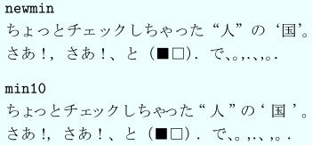
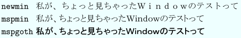

DVIwareとしてのdviout, dvioutにおけるトラブルシューティング, dvioutでのプレゼンテーション, Susie plug-inと画像フォーマット
May, 2021
誤りや補足すべき点があればお知らせ下さい --> dviout@tug.org
角藤氏によるTeXディストリビューションであるW32TeXをインストールした後で、ここの dviout for Windows のインストール手順を踏むと良いでしょう。
ここでは、これらの TeX のインストール後の dviout for Windows と それで使われるフォントとのインストールについて述べます。
次のものも参考にされるとよいでしょう。
その他
以下に書かれた解説が分からない場合や、簡単にTeXのシステムとdviout for Windowsとをインストールしたい場合は、下記の書籍をお薦めします。
内容
１. dviout for Windowsが使うフォント
２. 印刷方式とフォント
３. 関連プログラムとフォントのインストール
４. dviout for Windowsのインストール
５. dviout for Windowsを使う
６. dviout for Windowsのアンインストール
７. dviout for Windowsの機能
８. エディターとの連係
９. いくつかのヒント
dviout for Windowsは、LaTeXやpLaTeXなどによって作成されたdviファイルを元に、出力するのに必要なフォントの文字の画像データをファイルなどから読んで、表示（preview）や印刷を行います。
一般に、表示には印刷より低解像度のフォントを用いますが、dviout for Windowsは、高解像度のフォントをgray scaleを使って低解像度でも見やすく変換して表示することが出来ます。 そのため、フォントのインストールには、印刷にどのような解像度のフォントを用いるかが基本になり、それはプリンタの解像度と合致していなければなりません。
dviout for Windowsは、各種のフォント形式をサポートしていますが、普通用いられる代表的なものについて述べます。
なお、dvioutとそれが使うフォントについては、詳しくは関連文書
をご覧下さい。
TeXのシステムにはフォントの文字の画像データを生成するためのプログラム（メタフォント）が備わっていて、生成の仕方を記述したソースファイルを元に文字の画像データを作成することが出来ます。
Knuthが作成したComputer Modenシリーズ（CM）のフォントやLaTeXのフォント（斜めの線や円弧など）、それからAMS(American Mathematical Society)のフォント（CMの若干の拡張、数学記号、ドイツ文字、ロシア文字）はこのメタフォントのソースで記述され、TeXでは最も標準的に使われています。
メタフォントから解像度に応じた文字データのビットマップ画像ファイル(フォントグリフファイル）を生成するには時間がかかるため、予め生成してPK形式に圧縮したものを通常用います。 ただし、dviファイルの出力に必要なPK形式フォントが無くても、対応するメタフォントソースとメタフォントプログラムがあれば、dviout for Windowsは、その場でメタフォントを起動してPK形式フォントを作成することができ、作成したものを使用すると共に再度使うときのためにディスク上に置いておきます（フォントの自動生成機能）。
このようなPK形式のフォントグリフファイルは、たとえばcmr10（Computer Modern 10 point）の300dpiのものは、通常 cmr10.300pk というファイル名になっています。ただし、300dpiの解像度の場合でも、異なるサイズの文字も用いるため、cmr10.360pk や cmr10.432pk なども、場合に応じて使われます。
解像度だけでなくて、プリンタの特性等に応じて変えられるパラメータも指定できるので、それぞれのプリンタに最適なパラメータでフォントグリフファイルは生成されています（たとえば、縦横の線と斜めの線との濃さの違い等）。
TeXによるdviファイルの作成は（フォントグリフファイルは必要有りませんが）各文字の大きさなどを記述したフォントメトリックファイルを元になされます。このフォントメトリックファイルは、メタフォントによってフォントグリフファイルと同時に作成されますが、解像度などに依らないものです。拡張子は .tfm となっていて、cmr10の場合は、cmr10.tfm がフォントメトリックファイルです。
PKフォントファイルにも各文字の大きさなどが書かれてあるので、dviout for WindowsではPK形式フォントを使う場合、対応するフォントメトリックファイルは必要としません。
メタフォントのソースで記述されたフォントでなくても、フォントメトリックファイルとフォントグリフファイルがあれば、それをTeXで用いることが出来るので、PostScriptフォント（この場合は、フォントグリフデータを作るのに、メタフォントでなくGhostscriptが使われます）なども、dviout
for Windows で用いることが出来ます。
これらの仲介をするのは、バーチャルフォントの仕組み（Knuthによって仕様が決められたもの）といくつかの支援プログラムですが、ここではその説明を省略します。
TrueTypeフォントもフォントグリフファイルではなく、やはり文字のビットマップ画像データの生成のためのデータが記述されているものですが、メタフォントで生成するより高速に生成出来るので（よってより精度は低い）、普通は必要なときにフォントグリフを生成し、不要になればそのフォントグリフデータは残さず消してしまいます。
特に Windows は TrueTypeフォントをサポートしており、文字のフォントグリフを得るのはWindows側に任せることができます。さらに、フォントグリフを処理しなくても、直接指定したサイズと位置で、画面やプリンタに出力できます。
Windowsでは文字には通常TrueTypeフォントを使用するため、Windows専用のプリンタでは、TrueTypeフォントの文字を直接出力すると、フォントグリフなどの画像データで出力するより、高品位で遙かに高速となることがあります。特に最近のカラー対応のインクジェットプリンタではこの傾向が見られます。
アスキーのTeXは、もともと既に存在していた和文フォントを元に設計され、それに対応するフォントメトリックファイル（欧文の場合のtfmファイルに対してjfmファイルと言われるが、拡張子は同じ .tfm である）が作成されました。欧文文字の場合はフォントのデザインや文字毎に各文字の大きさが異なっていますが、和文フォントでは漢字については文字の幅が一定である、などの違いからフォントのデザインが異なっても、同じ内容のフォントメトリックファイルを用いることが多くあります。
以上の理由で、dviout for Windowsでは、和文フォントにはWindowsのTrueTypeフォントを用いるのが普通です。TrueTypeフォントにも文字幅などのデータが書かれていますが、その精度は良くないので、dviout for Windows は対応する（拡張子が .tfm の）フォントメトリックファイルを必要とします。
Windowsでは、TrueTypeフォントの方が扱い易いので、CMなどのフォントをTrueTypeフォントに変換したものも存在します。こちらを用いれば、「解像度毎に異なったフォントグリフファイルを用意する必要がない」という利点もあります。ただし、「プリンタの特性に応じて文字の画像データを変える」というほど精巧な仕組みにはなっていません。
LIPS III/IV あるいは ESC/Pageのレーザプリンタに特化し、最適化を行ったプリンタドライバをdviout for Windowsは備えています。また、レーザプリンタ内蔵の和文フォントを印刷に使うことができます。
dviout for Windowsは様々な印刷方式をサポートしています。主に３つに分けられます。
2.1.1. TrueTypeフォントのフォントグリフを得ず、Windowsのプリンタドライバに任せて出力
dviout for Windowsのデフォルトの印刷方式（Option → Setup Parameters... → Graphic → color specials: auto mode(p2)）で、印刷の際に patch2 を指定するのと同等です。
Windowsに特化したプリンタの場合、TrueTypeフォントを用いると、高品位で高速な印刷が期待できます。
となるので、なるべくTrueTypeフォントのみ用いるようにしています。
このとき、PK形式フォントの文字は、Windowsのプリンタドライバによって文字毎に張り付けられます。Windowsのドライバによっては、PKフォントの文字が多いと負担が大きくなります。
特にPostScript用のプリンタドライバの場合はそのドライバーにバグが多いようなので、PKフォントの文字を使ったり、画像ファイルを張りこむ場合は、次の方式の方が無難です（「白抜き文字が印刷されない」「画像がうまく取り込めない」などの現象の回避のため）。
2.1.2. 各文字のフォントグリフを用いて１ページの画像データを合成し、それをWindowsのプリンタドライバを用いて出力
Option → Setup Parameters... → Graphic → color specials: auto mode(rep) とすると（Ver.3.08.1以降）このような印刷方式になります。
印刷の際に replace を指定するのと同等です。 Ver.3.07までは、これがデフォルトでした。
2.2.1. ESC/Page および LIPS III/IV に特化された内蔵のプリンタドライバ
これらのレーザプリンタの場合は
などの機能をサポートするとともに、多くのオプションパラメータを指定することができ、高速かつ高品位な印刷が可能です。
但し、プリンタ側のパネルでの設定がおかしいと正しく印刷されません。またプリンタの内蔵メモリーがその解像度と比較して少ない場合に問題が生じます（ページプリンタなので、プリンタ側に１ページの画像データを作成するのに足る十分なメモリーが必要）。
2.2.2. 外部のプリンタ設定ファイルを参照するdviout内蔵のドライバ
プリンタのコントロールコードに応じた設定ファイル（拡張子のデフォルトは .CFG）を参照して印刷するもので、MS-DOS版のdviprtからの印刷方式。ESC/P, NEC PC-PR, NEC NMなどは設定ファイルを内蔵しているので、外部の設定ファイルを参照しなくてもよい。
コンソール版のdviprtや、dvipsk, dvi2ps などの TeX の印刷プログラムを呼び出すことができます。印刷範囲などの種々のパラメータを渡すことができます。
3.1. TrueTypeフォントのインストール
和文には通常 TrueType フォントを用いますが、既に述べたように、欧文フォントにもTrueType フォントを用いると、良い点が沢山あります。
PKフォントを使ってWindowsのPostScript driverによって印刷する場合は、 デフォルトの印刷方式でなく auto mode(rep) を使う方がよい。
必要な欧文フォントの全てがTrueTypeフォントで提供されているとは限りませんが、標準的に使われる
CMフォント と AMSフォント には、フリーに提供されている BaKoMaフォントがあります。
それは以下のようにしてインストール（すなわちWindowsのシステムへの登録）できますが、dviout
for Windowsのパラメータで、それを使うかどうかの指定をします。
まず、BaKoMaのTrueTypeフォントのパッケージ bakoma.lzh (リンク切れ)（WindowsXPなどでも正常にアクセス出来るように、コードテーブルのバグを修正したもの）を、lha などで適当なディレクトリに展開しておきます。
Windowsのデスクトップから
スタート → 設定 → コントロールパネル → フォント → ファイル → 新しいフォントのインストール
で、展開したフォントのあるフォルダに移動し、全てを選択すれば登録されます。
このとき、「フォントフォルダーにコピーする」をチェックをしていた場合は、展開したフォントは全て削除してかまいません。チェックをはずしていた場合は、展開したフォルダーに置いたままで使うことになります。
より詳しくは 乙部氏の解説記事
をご覧ください。
なお、自動インストールを行うプログラム（含フォント）FixBKM.msi があり、これを使うと簡単です。
TeXのシステムはメタフォントも含めて既にインストールされていて、フォント生成のプログラムmktexpk（古いものでは、MaKeTeXPK）が正常に動作する状態になっているとします。
欧文フォントに対して、TrueTypeフォントを用いる場合も、全てがTrueTypeとして存在しているかどうか分かりません。TrueTypeフォントまたは必要なPKフォントが存在しないフォントも （対応するメタフォントのソースが有れば、あるいはVirtual fonts経由で適当な方法で）PKフォントを自動的に作成して使うことが出来るように設定することにします。
印刷のときの実際の解像度が 300dpi としましょう。 （プリンタの仕様を注意深く調べて解像度を得てください）。 MS-DOSプロンプト（スタート → プログラム → MS-DOSプロンプト）から
mktexpk cmr10 300 300 300/300
を実行します（解像度が 300dpi と異なるときは、上の 300 をその値に変えます）。
既にPKフォントが存在していれば
^r/fonts/pk/cx/public/cm/cmr10.300pk exists.
というように表示され（^r は、たとえば c:/usr/local/share/texmf のようなフォルダ名です）、存在していない場合はPKフォント cmr10.300pk が作成されます（なお、古いTeXのシステムでは mktexpk でなく maketexpk とします。これは以下も同様です）。これがうまくいかない場合は、以下を参照するほか、TeXのインストールチェックをしてみましょう。
TEXMFMAIN=c:/usr/local/share/texmf
のような表示があればOKです。そうでなければ、起動時に参照される
autoexexc.bat でこの環境変数を設定してください（TeXのシステムのインストールの一環です。TEXMFMAINはTeXのシステムをインストールした基準となるフォルダーを表します。但し区切りは
\ でなく / で表します）。
ただし、角籐氏のパッケージでWeb2C 7.3.7以降のものは、環境変数 TEXMFMAIN, TEXMF, TEXMFCNF の設定は不要になり、間違った設定をするとエラーになります。
MAKETEXPK_MODE_118 = pcprevw
MAKETEXPK_MODE_160 = nectzo
MAKETEXPK_MODE_180 = lqlores
MAKETEXPK_MODE_240 = canonlbp
MAKETEXPK_MODE_300 = cx
MAKETEXPK_MODE_320 = neclm
MAKETEXPK_MODE_360 = bjtenex
MAKETEXPK_MODE_400 = nexthi
MAKETEXPK_MODE_600 = canonex
となっています。
正常に終了した場合は、さらに
mktexpk cmr10 300 300 300/300
mktexpk cmr10 360 300 360/300
mktexpk lcircle10 300 300 300/300
mktexpk lcircle10 360 300 360/300
mktexpk msam10 300 300 300/300
mktexpk msam10 360 300 360/300
を実行します（なお、AMSのフォントを使用しない場合は、masm10 を含む最後の2行は必要有りません）。この 360 は 300 の1.2倍の解像度を表し、TeXではこのような解像度比のフォントをよく用います。
印刷の際の解像度が 300dpi でなくて、たとえば 400dpi であったなら、上記の300を400に、その1.2倍の360を480に修正して実行してください。いま作成された（あるいは既に存在していた）フォントは、dviout for Windowsのインストールの際に、フォントの所在を自動設定するのに参考にされますので、忘れず実行してください。
3.3. 関連プログラムのインストール
インストールした場合、正常に動作するかどうかテストして下さい。
スタート → プログラム → MS-DOS プロンプト から
gswin32 article9.ps
を実行してみましょう（gsview ではありません）。
gswin32.exeへ のパスが設定されていないか、あるいは、環境変数 GS_LIB が 設定されていないと動作しません。両者とも autoexec.bat あるいは WindowsNT/2000/XP ではコントロールパネルで設定し、環境変数 PATH や環境変数 GS_LIB に書きます。
PostScript以外の BMP, WMF, JPEG, TIFF などの画像を LaTeX2eの グラフィックパッケージ で取り込むことがある場合は、dviout.exe をインストールしたディレクトリからみて Graphic\Latex2e\color.cfg と Graphic\Latex2e\graphic.cfg という２つのファイルを、 TeX をインストールした texmf\tex\latex\config に、また Graphic\Latex2e\dviout.def を texmf\tex\latex\graphics にコピーします。これらは、デフォルトの dvips 用のものに対して上位互換です。
先頭に戻る
TeXのシステムがインストールされ、前項に書いたフォントのインストールも完了しているとします。
4.1. dviout for Windowsはそれ自身をアンストールすることなども考慮すると、 独自のフォルダを作ってそこにインストールするのが良いでしょう。たとえば、 c:\dviout というフォルダを作成して、そこにインストールすることにします。
dviout for Windowsのパッケージは、CTAN dviout または CTAN dviout (ring server) から取得できます。 dviout????-inst.zip という名前のファイルです。
dviout for Windowsの実行ファイルのパッケージが dviout3190-inst.zip
であったとすると、dviout3190-inst.zip を c:\dviout に展開し、 コマンドプロンプトから、あるいは、「スタート
→ ファイル名を指定して実行」で c:\dviout にあるプログラム dviout
を実行します。
Install fundamental parameters?
と尋ねられるので、Yes を選択します（No と答えた後、dviout のメニューバーから Option → Install を選んでも同じです）。
4.2. 最初のダイアログ(Font resolution and Paper size)では、解像度を正しく設定することが重要です。
PKフォントのインストール の項で使った解像度を Resolution of font(dpi:) に設定します（[Help] を押すと、解説が表示されます）。
Paper size: は A4 で Portrait（用紙の縦置き）がデフォルトですが、このままで 差し支えないでしょう（必要なら後でデフォルトを変更できます）。
4.3. 解像度を正しく設定したら、[> Next] を押して次の Register the location of Font Files に進み、フォントの所在の設定をします。
フォントの所在の推定機能を使うため、[Guess]
を押します。 PKフォントのインストールのステップが完了していれば、（設定した解像度を元に）ハードディスクを全て検索して、自動的に
TEXROOT: と TEXPK: とが設定されます。
フォントが２カ所で見つかると、どちらを使うかが尋ねられますので、正しく答えてください。PKフォントファイルの存在するフォルダーのみが問題です。
たとえば
TEXROOT: ^T\fonts
TEXPK: ^r\pk\cx\\^s.^dpk;^r\tfm\ptex\^s.tfm;^r\vf\\^s.vf
のようになります。
なお、角藤氏によるTeXのパッケージをインストールした場合は、
標準的な日本語TeX環境が検知されました．と表示された場合は、[はい(Y)]を選択します。 一方、以下のように表示された場合は、[いいえ(N)] を選択します。
それにあった標準設定を選択します．
(Y)es: Guess TEXROOT/TEXPK/L from fonts in DISKすると、検索はスキップされ標準的設定となりますので（Ver.3.13.1以降：推奨）、次の4.4に進みます。
(N)o : Set default value for TEXROOT/TEXPK/L
■ Virtual fonts で（PostScript のフォントを用いるときなどで）ps2pk または gsftopk を使って PK フォントを生成する場合、modeless というディレクトリの下に生成されたフォントが入るようになっていることがあります。この場合は TEXPK の設定に
TEXPK: ^r\pk\cx\\^s.^dpk;^r\tfm\ptex\^s.tfm;^r\pk\modeless\\^s.^dpk;^r\vf\\^s.vf
のように ^r\pk\modeless\\^s.^dpk を追加しておきます。
■ Windowsのシステムに登録されたTrueTypeフォントを使うには、その フォントメトリックファイル （拡張子は .tfm）を指定します。 ^r\tfm\ptex\^s.tfm は和文のTrueTypeフォントの指定にあたります。
■ 欧文のTrueTypeフォントもインストールした場合、特にBaKoMaのTrueTypeフォントを インストールした場合は、CM/AMSのフォントメトリックファイルの指定を優先するため、 その所在をたとえば
TEXPK: ^r\tfm\public\cm\^s.tfm;^r\tfm\ams\\^s.tfm;\^r\pk\cx\\^s.^dpk;^r\tfm\ptex\^s.tfm;^r\vf\\^s.vf
のように先頭に挿入します（1行に書きます）。面倒ならば
TEXPK: ^r\tfm\\^s.tfm;\^r\pk\cx\\^s.^dpk;^r\vf\\^s.vf
でもかまいません（後者は起動時のフォントサーチにより時間がかかりますが、dvioutを何度か使っているうちに、フォントの所在のキャッシュ機能が働いて、速度の差はなくなります）。
TrueTypeフォントとPKフォントが使用可能なとき、より前に該当する前者が優先されることになります。
BaKoMa以外の欧文TrueTypeフォント、たとえば WinTeX に付属していたもの、あるいはそれらを併用して使う場合は、後から若干の変更が必要です。
4.4. 以上の設定の後、[> Next] を押して次の Register Programs に進みます。
Relate DVI file (.dvi) to dviout for Windows
Register dviout on Windows' menu: Start → Program
にチェックがついています。前者は、DVIファイルをマウスの左ボタンでクリックしたときなどに dviout for Windows を起動してそのDVIファイルを表示するための設定で、後者はスタートメニューに dviout for Windows を入れるものです。 このままで良いでしょう。
[gen:] のボタンを押してください。足りないフォントがある時に、自動的にPKフォントを作成する設定をするため、mktexpk.exe を探します。
Automatic search?
に Yes と答えれば、ディスクをサーチして自動的に見つけてくれます（No と答えて、フォルダを選択して指定することもできます）。 見つかると、たとえば
gen: `c:\usr\local\bin\mktexpk.exe --dpi ^d --bdpi ^D --mag ^M ^s
のように設定されます。` の後は mktexpk.exe のフルパス名で、その後の パラメータは、省略した ^s ^d ^D ^M という形式でもかまいません。 PKフォントのインストールのステップが終了していれば、問題なく設定されるでしょう。
たとえば、c:\ptex\bin\MaKeTeXPK.exe を使う場合は、
gen: `c:\ptex\bin\MaKeTeXPK.exe ^s ^d ^D ^M
と直接書き込んでもかまいません。
Ghostscript がインストールされている場合は、[gsx:] のボタンを押して、PostScript画像(EPSF)を取り込めるように設定しておきましょう。
4.5. 最後に [Finish] を押せば 基本設定は完了 ですが、その前に [< Back] で直前の設定に戻ることができます。 分からない部分があれば [Help] で調べてみてください。
ここで設定したパラメータは後から個別に変更が可能で、dviout のメニューバーから Option → Install を選択すれば、再度設定をやり直すこともできます。 また、最後に [Finish] でなくて [Cancel] を押せば、何も設定は行われません。
前項の基本設定が終了すれば、dviout for Windowsを使うことができます。
なお、以下のテスト結果が正常でない場合は、dviout のメニューバーから
Help → Troubles in dvioutあるいは
Help → Help Topicsを選んで、関係する項を参照してください。Q&Aの項など役に立つでしょう。
5.1. 表示のテストと調整
dvioutのメニューバーから、File → Open を選んで、dviout
がインストールされたフォルダーにある HyperTeX
のフォルダーに移って、hyper2 というDVIファイルを選択してみます。
これは、dviout を終了し、デスクトップから
スタート → プログラム → dviout → sample dvi file
を選択したのと同じです。 （必要なフォントが存在していない場合、自動生成が行われて）hyper2.dvi をプレビューすることができます。
hyperdvi と下線付きの青色に（デフォルトの場合）表示されている部分を、 マウスの左ボタンでクリックすると、hyperdvi.dvi という別の dvi ファイルに移動します。HyperTeX と呼ばれる機能です。
カーソルキーやマウス、スクロールバー（最も右にあるのはページスクロールバー）などを使って、紙面やページ間を移動することができます（IntelliMouseにも対応）。
dviout for WindowsのWindows内の紙面の大きさは、上部のルーペのボタンにより拡大/縮小できます（Display → Size → Magnify, Reduceでもよい）。また、Display → Contrast → Blacker, Whiter で、紙面のコントラストを変えることができます。
紙面のサイズやコントラストを変更した場合
Option → Setup Parameters → Display
を選択し（そこの Start: が現在の状態の設定で、直接変更も可能です）、[Save] を押し [Ok] で元に戻ると、現在の状態が次回の起動の時のデフォルトとなります。
（hyperdvi から、その最後のページの hyper2.dvi をクリックする、あるいは、上部の左から２つ目のボタンのクリック(or File → History)からの選択で）最初の文書に戻れます。 そこにあるいくつかの文書に HyperTeX の機能でジャンプしてみると良いでしょう。
5.2. 印刷のテストと調整
前項の最初の表示画面から test_a4.dvi をクリックし、test_a4.dvi を表示させて 印刷のテストをします。WindowsにPrinterの登録が正しくなされていて、プリンタの電源が入っていることを確認してください（ネットワークプリンタも可）。 A4用紙でテストします。
dviout 上部の左から３つ目のボタン（or File → Print）を選ぶと、印刷のダイアログが出てきますので、（複数のプリンタを使っていて、表示されているプリンタが、dviout からの印刷に使うものでない場合は、[Setup...]を選んで正しいものに変更した後） [OK]を押してください。
正しい位置に印刷されていることを確認してください。位置がおかしい場合の修正については、dviout の [Help] を見てください。
LIPSIII/IV, ESC/Page のプリンタを使用している場合は、dviout for Windows内蔵のドライバを使う方がよいでしょう。そのためには、メニューバーから
Option → Setup Parameters → Printer
のダイアログの右下の欄から、対応するプリンタの形式を選択します。さらに
dviprt is default.
のチェックをつけておきます。その後、[Save] 次に [Ok] を押し、先と同様に印刷を行います。印刷のダイアログで、dviprt にチェックがついていることを確認してください（これは、Windowsのプリンタドライバを使わない、ということを意味します）。
この印刷で印刷位置がずれているときは、位置補正が必要です。 ずれを mm 単位で計って、 再び Option → Setup parameters → Printer に移って、その10倍の値を Left: と Top: に設定し、[Save], [Ok] を押します。再度テストすると良いでしょう。
左に 5.12mm 上に 4.50mm 移動したいときは、Left: に 512、Up: に 450 を設定します。
dvi2ps などの他の印刷プログラムを使う場合の設定も、Option → Setup Parameters → Printer で行うことができます。そこで ? ボタンを押して、dviprt: の欄をマウスの左ボタンでクリックしてください。詳しい設定方法を見ることができます。場合によっては、標準出力をプリンタに出力に変更する付属の rawprt.exe が役に立ちます。
6.1. dviout for Windows（インストールした時のものとバージョンが異なっていても良い）を起動し、Option → Uninstall を選んで、Windows のシステム の registry に dviout が書き込んだデータを消去します（この過程では、ファイルの消去は一切行われません）。
6.2. この後、dvioutを再度起動することなく、dviout for Windowsをインストールしたフォルダーごと中身を消し去ります（ゴミ箱に入れる）。
6.3. dviout for Windowsは、Windows のシステムディレクトリなどにファイルをコピーすることはないので、上記の後、ゴミ箱を空にすればアンインストールが完了します。
なお、dviout for Windowsのバージョンアップの場合は、単にプログラムやデータの上書きで済みますので、アンインストールの必要はありません（アンインストールすると、パラメータの再設定が必要です）。 他の操作が必要な場合は、ドキュメントに書いてあります。
7.1. 使用可能なTeX
7.2. 拡張機能
7.3. プレビュー機能
7.4. 印刷機能
7.5. 欧文フォント、および、NTTjTeXの和文フォント
7.6. フォントライブラリ
7.7. アスキーpTeX および NTTjTeX の和文フォント
7.8. その他の機能
7.9. 付属のユーティリティープログラム
先頭に戻る
TeXによって文書を作成中は、エディターとpreviewerの両方を立ち上げ
エディター → TeXを動かしてDVIファイルを作成 → preview → エディター
を繰り返すことが多いと思われます。この時に便利な機能のいくつかを述べます。
Option → Setup Parameters... → System → Auto Renew
がチェックされている と、dviout で表示中のDVIファイルの更新に応じて、表示も更新されます。
具体的には、表示中のDVIファイルのTeXファイルをエディターで修正し、TeXを動か
してDVIファイルを作成した後、dviout
のプレビュー画面をクリックすると、更新 されたDVIファイルによって、プレビュー画面も更新されます。
Option → Continuous Renew
をチェックすると，0.5秒間隔でDVIファイルの更新を常に監視し、それに応じてプレビュー画面も更新します。
8.2. source special
source special をサポートした TeX コンパイラを用いると、エディターと dvioutとの間で相互ジャンプが出来ます（dviout for Windows Ver.3.11から）。
8.2.1 source special をサポートしたDVIファイル
TeX コンパイラによって DVIファイル を作成する時、-src
オプションを付加すれば source special のサポートされた DVIファイルが生成できます。たとえば
platex -src foo.tex
あるいは
latex -src=par,math mypaper
などとします。このときTeXコンパイラが source special 非対応の場合は
platex: unrecognized option `-src'
などというエラー表示がされて、DVIファイルは生成されません。 この場合でも付属のプログラムにより
srctex platex foo.tex
とすることにより、source special がサポートされたDVIファイルが生成 できます。
source special とは、DVIファイル中の段落の初めなどに挿入されるTeX の special で、挿入位置に対応するTeXのソースファイル名とソースにおけ る先頭からの行番号との情報を記したものです。
8.2.2 dviout からエディターへのジャンプ
dvioutからエディターを呼び出す手法は、 Option → Setup Parameters...
→ Common → src: に設定しておきます。
例えば、秀丸エディターの場合は
-src: c:\Program Files\Hidemaru\Hidemaru.exe^s/j%d "%s"
などとします（^s はパラメータとの区切り、%d は行番号、%s
はファイル名）。
このとき、秀丸エディターには、その他 → 動作環境 →
排他制御 で
「秀丸で同じファイルを開く場合、ファイルを読み直しする」を設定しておき
ます。
WinShell (Ver. 3以降）の場合は、WinShell で [オプション] → [主なTeX関連プログラムの設定] から、 右の [プログラム] のリストより「LaTeX」を選んで [コマンドライン] を
-src "%s.tex"とし、dviout の設定は
などとします。-src: C:\Program Files\WinShell\WinShell.exe^s-c "%s" -l %d
emacs, mule, meadowの場合は、 gnucilent を動かしておき
-src: gnuclientw^s +%d %s
と設定します。
なおgnuclientを動かすには、まずパッケージgnuserv.zipを展開して gnuclient.exe gnuclientw.exe gnudoit.exe gnuserv.exeを PATH の通った ディレクトリに、gnuserv.el は mule/meadow が探せる lisp ディレク トリにおき、M-x byte-compile-file などとして gnuserv.el を バイトコンパイルします。その後 $HOME/.emacs に
(require 'gnuserv)
(gnuserv-start)の二行を追加します。
上記のいずれの場合も、dviout のプレビュー画面で
あるいは
のうちのいずれかにより、マウスカーソルの位置に対応するTeXのソーステキストの箇所 がエディタに表示されます（dviout からエディターへのジャンプ）。 なお、前者の方がより正確なジャンプができます。
エディターがDDEサーバの機能を持っていれば、dvioutとのDDE交信 で、より快適にdvioutからエディターを呼び出すこともできます。
8.2.3. エディターからdvioutへのジャンプ
たとえばエディターから
または Ver.3.4.1 以降の場合はdviout foo "# 123 fo1.tex"
dviout -1 foo "# 123 fo1.tex"
というコマンドで dviout を呼び出すと、foo.dvi において TeXのソース テキストのうちの fo1.tex の 123行目付近に対応する部分が dviout のプ レビュー画面に表示されます（最初のパラメータ -1 は、 最初に起動された dviout に対するコマンドを示す）。 さらに Ver.3.13.3 からは
とすると（Ver.3.14.1 以降では、パラメータ -1 をつけるとよい）、 fo1.tex の123行目の文字列 This book を探し、 プレビュー画面でそれが含まれる部分を表示します。This book でなくて、この本 というような和文の文字列でもOKです。dviout foo "# 123/This book fo1.tex"
このような呼び出しには DDEによる交信 がサポートされているので、エディターがDDEをサポートしている場合（たとえば秀丸）は、DDEを使う方が高速で快適です。
なお、dviout Ver.3.14.3 からは、ファイル名の部分 fo1.tex は、 相対パス名の他、絶対パス名でも指定できるようになり、パスの区切り記号は / でなくて \ も使えるようになりました。空白が混ざる場合は、'c:\My Documents\fo1.tex' のように、 ' ' で囲って指定します。
たとえば WinShell の場合は、[オプション] → [主なTeX関連プログラムの設定] から、右の [プログラム] のリストより「DVIView」を選び、[コマンドライン] を
-1 %s.dvi "# %l '%c.tex'"と設定します。
dviout for Windowsは、表示された取り込み画像をマウスの左ボタンでダブルクリックすると、その画像ファイルに対応したグラフィック・エディターを呼び出す機能をもっています。
画像ファイルとそのエディターとの対応は、画像ファイルの拡張子に基づきます。
-gsrc: .ps.eps=Illustrator.exe^s"%s";.bmp=mpaint^s"%s"とします。拡張子を最後の「.」の部分から書き（必要なら複数個並べる）、その後 「=」で対応するエディターの呼び出し方を書きます（呼び出し方は，前項の -src: と 同様の書式）。異なる呼び出し方のものは「;」で区切って書きます。
-texhelp:-NULL=(555,-20)-(1027,737)
\keyin{<string1>}{<string2>}では <string2> がホットスポットとなり、 クリックすると <string1> がクリップボードにコピーされます。 <string1> の中で空白を入れて" 0d 0a"のように書くと、改行が定義されます。
\K{<string>\K}では <string> に対応するホットスポットのクリックで、 <string> がクリップボードにコピーされますが、 Kfalse というオプションをつけると、 \K{<string>\K} は単に <string> と解釈されます。
...などとして使います。
\usepackage{keyin}
...
\begin{document}
...
\keyin{\begin{equation} 0d 0a\end{equation}}{Equation}
...
\[
\K{x_1+\cdots+x_n\K} = 1
\]
\end{document}
\usepackage[Kfalse]{keyin}とすれば、\K{x_1+\cdots+x_n} = 1 は単に {x_1+\cdots+x_n} = 1 と書いたのと同じことになります。
dviout for Windows は、DDEのサーバ機能を持っていて、それによってエディタ からdvioutのパラメータを変更したり、dviout をコントロールしてdvioutのほ とんどすべての機能を使うことができます。詳しくは、dviout の On-line Help などを御覧下さい。
不具合については、dvioutにおけるトラブルシューティングも参照してください。
解決できない部分や、問題点などがありましたら TeXフォーラム を通じて質問してください。その際の情報として、Ver.3.12.2以降のdvioutで、Help → System Info. で表示される情報を、[Copy] でクリップボードにコピーしたものを添えてください。
古い winttf.lzh がインストールされていれば、それをすべて削除します。それは、
texmf\fonts\tfm\windows
texmf\fonts\vf\windows
texmf\tex\latex\ttnfss
以下の全てのファイルです（フォルダごとゴミ箱に捨てる）。
dviout のパッケージ付属の font\winttf.zip を展開します。
それが、c:\dviout\font\winttf.zip であったなら
unzip c:\dviout\font\winttf
とします（.\texmf\
以下に多くのものが展開されます）。
なお、和文の詰め組みやぶら下げ用、あるいは、min10.tfm の不具合を修正した
newmin.tfm などを用いるには（次項参照）、付属のパッケージ exjfonts.zip をここで
インストールしておきます。
unzip c:\dviout\font\exjfonts
dviout を起動して、Option → Setup Parameters... → [Font2] の [ftt:]
ボタンを押して ftt: を以下のように設定します（^x は dviout のフォルダを表す）。
和文に使われているフォントは、min* と goth* あるいは、jis と jisg であるとします
（Help → Font Info. で分かります）。
1. Option → Setup Parameters... → WinJFont と選びます。
2. Japanese TT のチェックを確認し、jfm(omit pt)/tfm で、 対応する和文フォント min/goth/jis/jisg を選び（このとき、上部 TrueType Font の覧には、それに対して当てられるTrueType/OpenTypeフォント名が表示されます）、 次に [Change Font] ボタンを押します。
3. 表示されたダイアログ上部のリストWindowの矢印ボタンを押して、 リストの中から割り当てたいTrueTypeフォントを選択します（先頭に @ が付いているのは、縦書き用フォントです）。 OpenTypeフォントを選択するときは、[TrueType] のチェックをはずします。 下部に、そのフォントの文字のサンプルが表示されます。
4. それでよければ [OK] を押して、WinJFont のダイアログに戻り、[Define] を 押します。
5. 他にも割り当てたいものがあれば、同様のことを行います。なお、文字サイズ を調整するには、4. の [Define] ボタンを押す前に H scale（縦方向）, V scale（横方向）の値を変えます。
6. この変更は、現在操作中の dviout に限るとして、WinJFont を [OK] ボタンを 押して抜け出します （次回以降も引き継ぐときは、[OK] の前に [Save] を押しておきます）。
なお、縦書きの場合は tmin/tgoth などが用いられます。
hgrgysj "HG行書体"という行は、hgrgysj には、和文TrueTypeフォント「HG行書体」を割り当てることを意味します。
2. 和文フォントの jfm ファイルの作成
copy jis.tfm hgrgysj.tfmなどとします。
jis.tfm と jisg.tfm の差はないので、どちらを用いても同じです。min10.tfm と goth10.tfm についても同様です。
hgprtgysj "@HGP行書体"は、TeXのフォント hgprtgysj に縦書きのプロポーショナル和文フォント 「@HGP行書体」を対応づけています。 pttfonts.map がこのような行を含んでいて、この和文フォントが存在していれば、 pttfonts.map が存在するフォルダで
propw -u pttfonts.mapとすれば、対応する jfmファイル hgprtgysj.tfm が作成されますので、 それを所定のフォルダ（たとえば、TeX のフォルダの texmf\fonts\tfm\ptex） にコピーしておきます。
3. TeX での使用
いくつかの方法があり、詳しくは TeX の概説書に譲りますが、
たとえば最も簡単には、以下のようにすると使えます。
...
\font\gyou=hgrgysj
\font\gyoub=hgrgysj at 12pt
...
{\gyoub 山下}
名前は「{\gyou 山上}」です。
...

\documentclass[a4j,10pt]{jarticle}
\usepackage{newmin}
...
texmf\doc\exjfonts\ にあるドキュメントをご覧下さい。
従来の jarticle などをそのまま（\usepackage{newmin} などを書かずに）使った場合には、従来の min10 が使われることになるので、 上記のような空きの不具合が発生します。 これを修正するにはフォーマットファイルの再生成が必要で、以下のようにします。
なお、 newmin.lzh (リンク切れ) または newmin.zip (リンク切れ) を利用すれば，上記は不要です。
\documentclass[a4paper,10pt]{jarticle}
\usepackage{tumegumi}
\begin{document}
としておけば、大きな文字を使った部分、\texttume{......}
の中、および \tumeshape 命令によって、ＭＳ P明朝やＭＳ Pゴシックを使って組まれます（cf.
texmf\doc\ttnfss の tumegumi.tex, tumegumi.dvi）。
なお、詰めのメトリックはフォント毎に異なるので、詰め組用の tfm
ファイルは使うフォントに応じて作成したものを使わなくてはなりません。
tumegumi.sty は、そのままでは ＭＳ Ｐ明朝（mspmin.tfm）やＭＳ
Ｐゴシック（mspgoth.tfm）専用です。

propw.exe を使うと、Windowsに登録された任意の和文プロポーショナルフォントの
tfm ファイルを作成することが出来ます。pttfonts.map
には多くの和文プロポーショナルフォントが登録されており、pttfonts.map が
c:\dviout\map にインストールされていれば、texmf
の上のディレクトリから
cd texmf\fonts\tfm\windows\wabun
propw c:\dviout\map\pttfonts.map
とすると、pttfonts.map に書かれていてWindowsに登録されている全ての和文の tfm ファイルが作成されます（propw.exe や pltotf.exe にパスが取っている必要があります）。pttfonts.map に新たなフォントを書き加えておけば、それに対応する和文 tfm も作成されます。
^r\tfm\\^s^tfm;^r\pk\\^s.^dpk;^r\vf\\^s.vf;^r\ovf\\^s.ovf;^r\tfm\\^s.tfm
とすると
TrueTypeフォント → PKフォント → Virtualフォント → OmegaのVirtualフォント → 和文TrueTypeフォントの代替
という順でフォントが探されて使われます。
\AtBeginDVI{\special{papersize=36.4cm,25.7cm}}\AtBeginDVI{\special{papersize=\the\paperwidth,\the\paperheight}}\AtBeginDVI{\special{dviout `keep y}}
と書いておけば、この文書を抜け出すと、元の紙面サイズに戻ります（詳しくは、On-line
Help の dviout special を参照してください）。
なお、このとき作成された *.pfi （たとえば、foo.pfi とします）を
dviadd foo.pfi dvi_fileとして dvi_file に埋め込んでおけば、psfrag.pro のない環境でも、dviout による表示が可能です。
一方、TeXのシステムの大幅な変更があって、再度dvioutの初期設定を行いたいときは、上書き後、メニューバーから、Option → Install を選びます。
Ver.3.02 以降のデフォルトの変更は、以下の通りです。詳しくは、パッケージに付属の文書 readme.txt の「７．Ver.3.0 以降からのバージョンアップ」をご覧ください。
共通で使われるPKフォントを、ユーザから読み込みのみ可能なディレクトリに作成しておき、
それ以外のPKフォントが各ユーザ毎に個別の書き込み可能なディレクトリ場所に
自動作成されるようにするには、たとえば次のようにします。
角藤氏のTeXのパッケージ
を使い d:\usera\pk に個人のPKフォントを作成する場合
1. dviout の gen: で、以下のように destination directory を指定します。
`C:\usr\local\bin\mktexpk.exe --dpi ^d --bdpi ^D --mag ^M --destdir d:/usera/pk ^s
2. dviout の TEXPK: に次を追加します。
d:\usera\pk\\^s.^dpk
3. dvipsなどで各ユーザが作成したPKフォントを使うため、
環境変数 PKFONTS を次のように設定します。
最後のセミコロンを忘れてはいけません。
PKFONTS=d:/usera/pk//;
多くの制御コマンドは、２文字のシンボルで表され、それは Help
(→Other Info) →Key table （あるいは、Option→Setup Parameters...→[Key]）
とすると [ ] で囲って示されます。
最初の文字は、F, J, S, D, V, N, P, O, H, ! で、アルファベットはメニューバー
の項目に（[Alt+アルファベット]で選択されるものに対応）、
! はそれ以外のものに対応します。
; を挟むと、それ以前の部分の実行が完了するまで、それ以下の部分の解釈が保留されます。
; を挟む、なども用いて結果を試してから使ってください。
例えば
-y=B5P : 用紙サイズのパラメータ y の値を B5用紙でPortraitに設定 -OY=-1.5cm : 縦方向の位置補正オフセットパラメータ OY の値を -1.5cm に設定 FP : Alt+FP (メニューバーの File→Print: 印刷ダイアログへ）に対応 DV : Alt+DNV（メニューバーの Display→conTrast→reVerse：画面反転）に対応 DL : Alt+DSF（メニューバーの Display→Size→fuLl：画面フル表示）に対応 !P : プレゼンテーションモードへ -mode=n : mode を n に変更（n は、0 から 9 まで） -wait=n : n 1: 標準 0: テンポラリファイルを残す 2, 3: 警告を無視
このように組み合わせたものを設定するには、以下のような方法があります。
"-y=B5P -OY=-1.5cm DV!PDL" をパラメータ -macro: に設定
（5個のセットまで可能）\special{dviout -y=B5P -OY=-1.5cm DV!PDL} のようにTeXのソースに書く\special{html:<a href="dviout: -y=B5P -OY=-1.5cm DV!PDL">}hot spot\special{html:</a>} とTeXのソースに書くy=B5P OY=-1.5cm Set=DV!PDL とファイルに書く（キー入力などを表すシンボルの２文字の組の列は Set= に続けて書きます）[Function(-y=B5P -OY=-1.5cm DV!PDL)] というXTYP_EXECUTEトランザクションコマンドを送る
!A!Zdy!pdl !A!N!Q!F;!A!T;!ADX;fn!b !A!Z!pdf !A!Z!pdl "-OX=0mm -OY=0mm !I"
dvioutは、そのパス名に空白や全角文字の入った名前のフォルダにインストールしても正常に動作します。 しかし、dvioutを他のプログラムから呼び出す場合や、関連する他のプログラムで問題が生じる可能性がありますので、それを避けるのが無難でしょう。
dvioutのフォルダにパス（環境変数のPATHで与えられる）を通さなくても dviout自身は正常に動作します。 しかし、コマンドラインからの起動や他のプログラムから呼び出されることを考えると、パスを通しておくのがよいでしょう。
OSからのリンク（DVIファイルのダブルクリックからのdvioutの起動と、スタート → プログラム からのdvioutの起動）を直す必要がありますが、dvioutを起動後 Option → Install で設定を変更せずに進んで最後の[Finish]ボタンを押せば、これらも修正されます。
TeXのシステムやＧhostscriptなど関連するプログラムに移動があった場合は、 dvioutの対応するパラメータの修正が必要でしょう。具体的には
TEXROOT: TEXPK: （TeXのシステムの移動、^T を使ったデフォルト設定ならば修正不要）や gen:（フォント生成プログラム） ftt:（フォントマップファイル） gsx:（Ghostscript) spi:（Susie plug-in） src: （エディタ）
などです。^T や ^x を使った指定ならば変更不要でしょう。Option → Setup Parameters... で各シートをチェックしてみましょう。
たとえば、Windows NT/2000/XP 上で使うには、Windows のシステムディレクトリの system32 にある config.nt および config.wow に
device=ansi.sysの一行を書き加えてエスケープ sequence が使用可能なようにしておき
のように起動します（dmerge でインデックスファイルを作成しておく必要があり、付属の spell.doc の最初の部分を参照のこと）。 TeX向けの最も簡単な [parameters] としては、-i\ （TeX のキーワードを辞書に含めていれば、-t\）。spell -- [parameters] TEX_source_file
TeXの原稿に対して、以下の機能をもつMicroSPELLに匹敵するスペルチェッカーはみあたらないようなので、いずれ各種エディータとも連携するWindows版を作成したいと思っています（MS-DOS版よりは簡単に作成できるはず）。
詳しいドキュメントが付属していますが、TeXのソースのスペルチェックに関連して、いくつかの特長を挙げます。
一方、特定の文字で始まるものを無視することも出来ます（オプション -i）。-i\ と指定すると、先の文でチェックされる単語は "My", "LaTeX" のみになります。 これらの指定がないときに切り出される単語は、"My", "LaTeX", "bf", "LaTeX" となります。
spell -- -i\{ -l3 TEX_source_file
-C:\`:\':\^:\":\=:\c{c}:\c{C}:{\ss}
と書かれた spellc.bat というバッチファイルとMicroSPELL一式をパスの通った フォルダ（ここでは，c:\bin）に入れ， さらに以下のパラメータを書いた（最後に改行か空白が必要） spell.cfg というファイルを c:\bin に入れておきます。spell -- -fc:\bin\spell.cfg -l3 %1 %2 %3
-C:\`:\':\^:\":\=:\c{c}:\c{C}:{\ss}:{\o}:{\O}:{\i}:{\j}:\u{\i}:{\aa}:\v{C}:{\l}
-uc:\bin\add.txt -i\{ -l3
とします。c:\bin\add.txt は、自分で追加登録した単語を、一行に一語づつ並べて書いたファイルです。 スペルチェック中で追加登録したい単語があれば、それを抜き出すことができますので、それを編集して追加します。spellc foo.tex
以上です。 dviout@tug.org